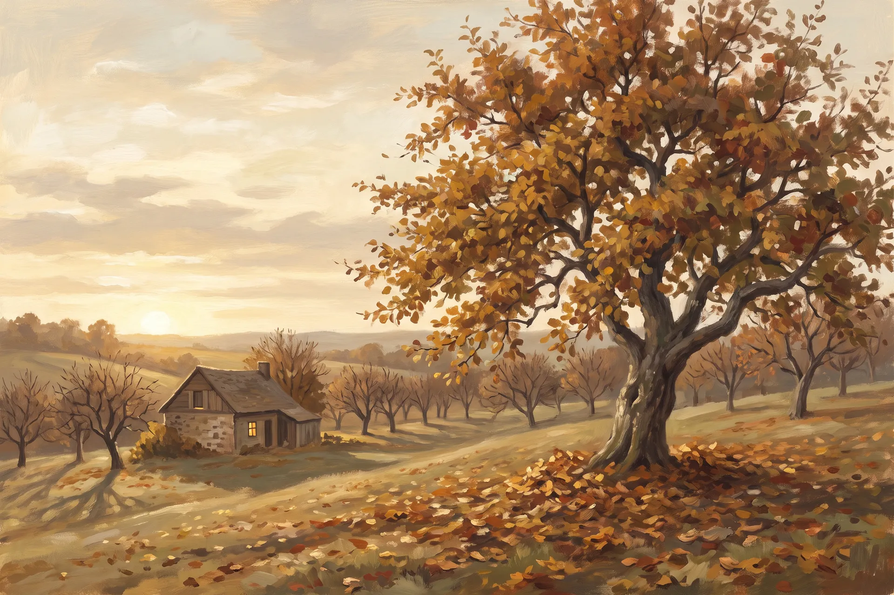
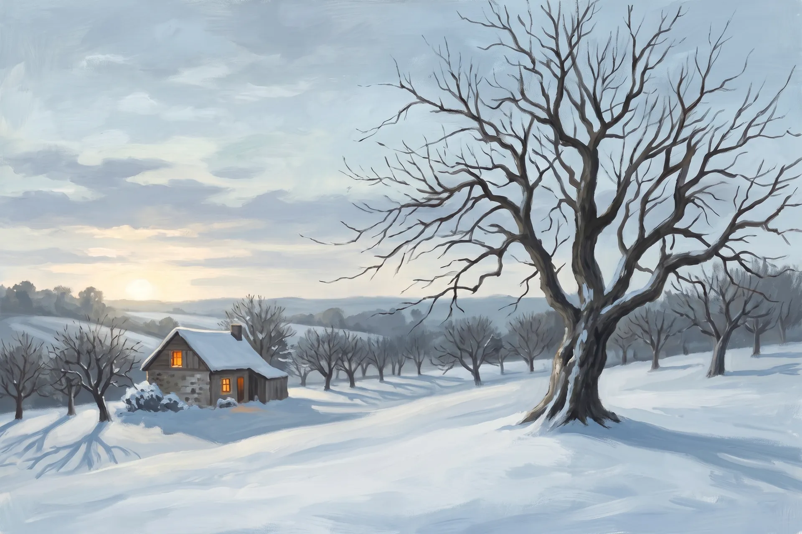
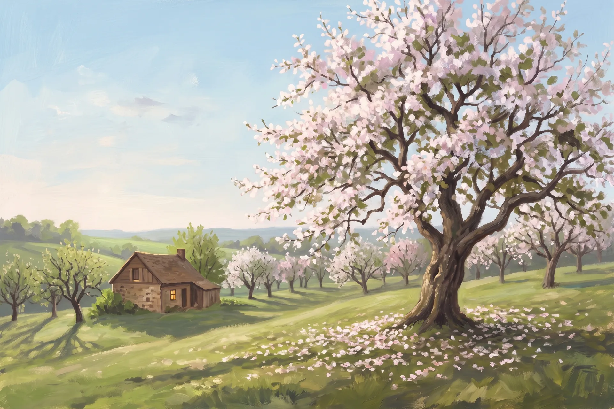
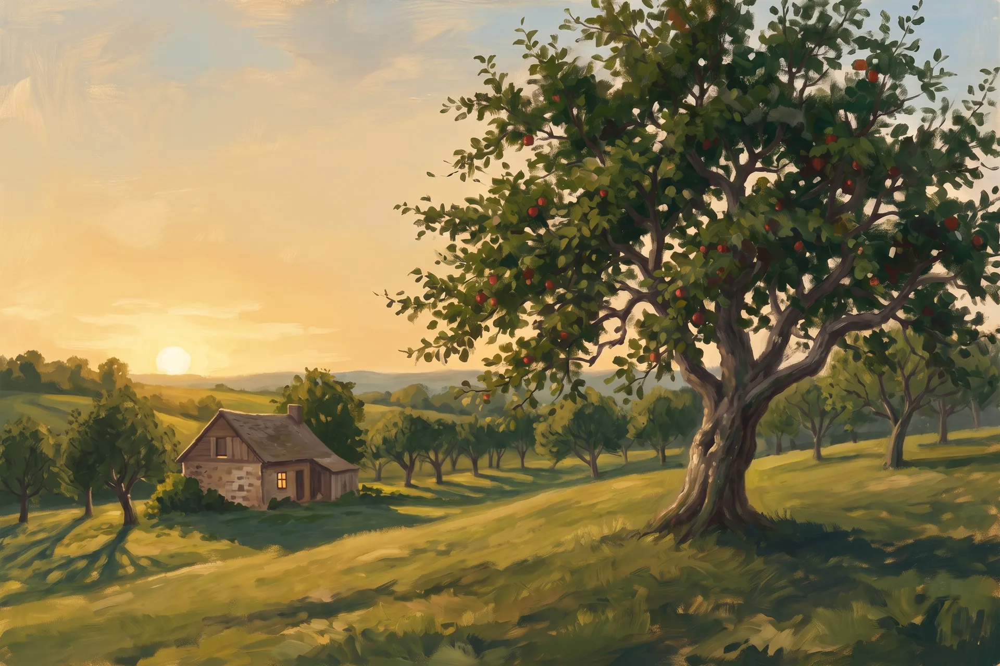

A seasonal kitchen in a working orchard. Forty-two trees, one long table, and a menu that follows them through the year.

The year’s work comes in. Crates stack by the cellar door, the presses run, and the kitchen cooks with its arms full.

The trees sleep and the pantry speaks. What autumn put away — preserved, pickled, cellared — carries the table through the cold.

Three weeks of blossom, and the whole hill hums. The kitchen goes light and green while the bees work overtime.

Tables under the tree from December to March. Lunch runs long, the light runs longer, and the first apples land before the plates are cleared.
Lunch Thursday to Sunday from noon. Dinner Friday and Saturday. Closed on frost mornings — call ahead in July.
The menu changes with the orchard, not the calendar; what you read above is how a year tastes here.
Book a table